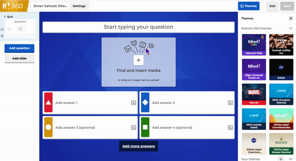

Jak uzyskać dostęp do kreatora kahoot
- Zaloguj się na swoje konto.
-
Kliknij przycisk Utwórz po prawej stronie
górnego paska nawigacyjnego.
-
Wybierz opcję Kahoot z rozwijanego menu, aby
utworzyć kahoot.
-
Po rozpoczęciu tworzenia kahoota możesz nawigować między
pytaniami i dodawać nowe za pomocą lewego paska bocznego. Możesz
tworzyć nowe pytania od podstaw, kopiować je z innych kahootów,
importować slajdy z prezentacji lub importować pytania quizowe z
arkusza kalkulacyjnego.
Dodawanie pytań
-
Podczas tworzenia kahoota kliknij przycisk
Dodaj pytanie w panelu po lewej stronie pod
pytaniami, które już dodałeś.
-
Wybierz typ pytania.

-
Wpisz pytanie. Pytania z sekcji
Test wiedzy wymagają podania odpowiedzi i
zaznaczenia poprawnej odpowiedzi (jeśli dotyczy wybranego typu
pytania).
-
Jeśli zapomnisz o jakimś elemencie pytania lub przekroczysz
limit znaków, po opuszczeniu pytania w panelu po lewej stronie
pojawi się wykrzyknik.
-
Funkcje oznaczone gwiazdką nie są objęte Twoim aktualnym planem.
Jeśli z nich korzystasz, zostaniesz poproszony o uaktualnienie
do udostępniania, hostowania i przypisywania gry.
- Możesz dodać do 100 pytań na kahoot.
Jak przenosić, powielać lub usuwać pytania
- Kliknij pytanie w panelu po lewej stronie.
-
Przeciągnij pytanie pionowo w panelu, aby umieścić je nad lub
pod innym pytaniem.
-
Kliknij ikonę powielania
, aby powielić pytanie.
-
Kliknij ikonę kosza na śmieci
, aby usunąć pytanie.